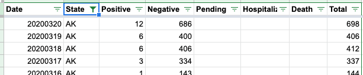

#1147: [DC] Amend recoveries in DC on 02/08/01 to correct for what we assume is a mistake in the DC download data
Issue number 1147
muamichali opened this issue on April 9, 2021, 8:58 AM PDT
Labels Data quality
State or US: District of Columbia
Describe the problem Washington DC reports via a web page, and an XLS download. On February 8, 2021, the spreadsheet indicated 28,986 while the webpage indicated 26,986. We captured the information from the webpage as we routinely did. The following day the number of recoveries in the sheet went down to 27,121. Since there was no explanation, and the webpage time-series is continous, we assume that the spreadsheet number is a data entry error and we are correcting it.
Link to data source
Provide links to original data sources that we can refer to, like a state COVID website.

Comments
#1147: [DC] Amend recoveries in DC on 02/08/01 to correct for what we assume is a mistake in the DC download data
Issue number 1147
muamichali opened this issue on April 9, 2021, 8:58 AM PDT
Labels Data quality
State or US: District of Columbia
Describe the problem Washington DC reports via a web page, and an XLS download. On February 8, 2021, the spreadsheet indicated 28,986 while the webpage indicated 26,986. We captured the information from the webpage as we routinely did. The following day the number of recoveries in the sheet went down to 27,121. Since there was no explanation, and the webpage time-series is continous, we assume that the spreadsheet number is a data entry error and we are correcting it.
Link to data source
Provide links to original data sources that we can refer to, like a state COVID website.
Comments
Rows edited: 1
DC 2021-02-08 recovered: 26986 (was 28986)
#1102: [DC] Patch 02/12 late testing update
Issue number 1102
hmhoffman opened this issue on February 13, 2021, 2:17 PM PST
State: DC
Dates affected: 02/12/21
Describe the issue: On February 12, 2021, the District of Columbia did not update their COVID-19 testing data by the time of our daily update.
Comments
Rows edited: 1 DC 2021-02-12 totalTestEncountersViral: 1154309 (was 1151484) totalTestsPeopleViral: 427581 (was 421753)
#1102: [DC] Patch 02/12 late testing update
Issue number 1102
hmhoffman opened this issue on February 13, 2021, 2:17 PM PST
State: DC
Dates affected: 02/12/21
Describe the issue: On February 12, 2021, the District of Columbia did not update their COVID-19 testing data by the time of our daily update.
Comments
Rows edited: 1 DC 2021-02-12 totalTestEncountersViral: 1154309 (was 1151484) totalTestsPeopleViral: 427581 (was 421753)
#1082: Removing values from the API field Negative from AK, CA, DC, GA, KY, NY, OH, OR, TX, VA and WA
Issue number 1082
jaclyde opened this issue on January 27, 2021, 3:13 PM PST
Labels Data quality
States: Alaska, California, Washington DC, Georgia, Kentucky, New York, Ohio, Oregon, Texas, Virginia, Washington
Issue: We are removing negatives that were created from mixed units (specimens minus cases or test encounters minus cases) for states that are using explicit totals in our main total test results field (called totalTestResults in the API). See the Data FAQ for additional explanation.
Comments
Alaska: Never reported negatives directly and always reported in specimens, removing total time series
Values Removed: Changes.txt
California: Never reported negatives directly, but did report in Total tests (people) until April 21, 2020. Removing time series from present to April 22, 2020.
Values Removed: Changes.txt
Washington DC: Never reported negatives directly, and has always reported encounters, removing total time series
Values Removed: Changes.txt
Georgia: Never reported negatives directly and always reported in specimens, removing total time series
Values Removed: Changes.txt
Kentucky: Never reported negatives directly and always reported in specimens, removing total time series
Values Removed: Changes.txt
New York: Never reported negatives directly and always reported in encounters, removing total time series
Values Removed: Changes.txt
Ohio: Never reported negatives directly and always reported in specimens, removing total time series
Values Removed: Changes.txt
Oregon: Never reported negatives directly, but did report in Total tests (people) until December 1, 2020. Removing time series from present to December 2, 2020.
Values Removed: Changes.txt
Texas: Never reported negatives directly and always reported in specimens, removing total time series
Values Removed: Changes.txt
Virginia: Never reported negatives directly and always reported in encounters, removing total time series
Values Removed: Changes.txt
Washington: Negatives were backfilled with values calculated from total tests (encounters)-confirmed cases in August 2020. Removing total time series.
Values Removed: Changes.txt
#1082: Removing values from the API field Negative from AK, CA, DC, GA, KY, NY, OH, OR, TX, VA and WA
Issue number 1082
jaclyde opened this issue on January 27, 2021, 3:13 PM PST
Labels Data quality
States: Alaska, California, Washington DC, Georgia, Kentucky, New York, Ohio, Oregon, Texas, Virginia, Washington
Issue: We are removing negatives that were created from mixed units (specimens minus cases or test encounters minus cases) for states that are using explicit totals in our main total test results field (called totalTestResults in the API). See the Data FAQ for additional explanation.
Comments
Alaska: Never reported negatives directly and always reported in specimens, removing total time series
Values Removed: Changes.txt
California: Never reported negatives directly, but did report in Total tests (people) until April 21, 2020. Removing time series from present to April 22, 2020.
Values Removed: Changes.txt
Washington DC: Never reported negatives directly, and has always reported encounters, removing total time series
Values Removed: Changes.txt
Georgia: Never reported negatives directly and always reported in specimens, removing total time series
Values Removed: Changes.txt
Kentucky: Never reported negatives directly and always reported in specimens, removing total time series
Values Removed: Changes.txt
New York: Never reported negatives directly and always reported in encounters, removing total time series
Values Removed: Changes.txt
Ohio: Never reported negatives directly and always reported in specimens, removing total time series
Values Removed: Changes.txt
Oregon: Never reported negatives directly, but did report in Total tests (people) until December 1, 2020. Removing time series from present to December 2, 2020.
Values Removed: Changes.txt
Texas: Never reported negatives directly and always reported in specimens, removing total time series
Values Removed: Changes.txt
Virginia: Never reported negatives directly and always reported in encounters, removing total time series
Values Removed: Changes.txt
Washington: Negatives were backfilled with values calculated from total tests (encounters)-confirmed cases in August 2020. Removing total time series.
Values Removed: Changes.txt
#831: [DC] Backfill total people tested once TotalTestResults is switched
Issue number 831
karaschechtman opened this issue on September 14, 2020, 2:20 PM PDT
Labels Data quality not stale
State or US: DC
Describe the problem DC's "Total Number of DC Residents Tested" represents people according to our outreach. Once totalTestResults is switched in the API for DC, fill DC's people timeseries from that field
Link to data source https://coronavirus.dc.gov/data each day listed here
Comments
I also patched 5/23 and 5/24 for total test encounters the day the timeseries became available to reflect revisions because it looks like we patched with the wrong values.
The drop on 5/23 was due to a review of data https://coronavirus.dc.gov/release/coronavirus-data-may-23-2020
Before

After
#803: [DC] "total overall tested" timeseries should be moved from people to encounters
Issue number 803
karaschechtman opened this issue on August 29, 2020, 10:53 AM PDT
Labels Data quality
State or US: DC
Describe the problem According to our outreach, the District of Columbia’s “total overall tested” figure on its dashboard represents test encounters, the number of unique individuals tested per day, with one exception: if an individual receives a positive and a negative test on the same day, they are counted twice rather than once. We should move it to the encounters field and change our capture in WS2 to match.
Link to data source people timeseries
Comments
Before:


After:


New WS2 tooltip
#560: [DC] Cases - PCL Historicals and WS2
Issue number 560
qpmnguyen opened this issue on July 1, 2020, 6:21 AM PDT
Labels PCL/SVP Historicals
Cases reported in DC are not clearly defined as confirmed cases. However, from 4/29 - 6/30, this value was reported in the confirmed column (Positive Cases (PCR)). Should correct for historicals and WS2 to not reflect this any more.
Comments
BEFORE -
AFTER - Corrected historicals by removing values from Positive Cases (PCR).
#539: [DC] PCL Historicals and WS2
Issue number 539
pscsharon opened this issue on June 25, 2020, 4:01 PM PDT
Labels PCL/SVP Historicals
Death values are historically recorded in both the "Deaths" and "Deaths (Confirmed)" columns for DC. However, DC’s death values are unclear about what they represent, so they should only be recorded in the main "Deaths" field.
Note we started recording confirmed-deaths starting 5/12. The numbers have matched total-deaths each day.
Comments
Edited the tooltip-note and also added a process note.
-
I deleted the value from Worksheet2
-
I deleted the values from States Daily BEFORE
AFTER
#352: CDC Has Slashed COVID-19 Deaths by 40%
Issue number 352
JustOneGuyHere opened this issue on May 3, 2020, 5:29 PM PDT
Labels Data source
I suggest publishing both sets of numbers. I have used this site to track the numbers, but they need to be accurate.
https://www.cdc.gov/nchs/nvss/vsrr/covid19/index.htm
Comments
Hi @JustOneGuyHere
Please see the CDC Data tracker here https://www.cdc.gov/covid-data-tracker/index.html
Currently 65,735 deaths are reported on the page.
Thanks, censor.
On Sun, May 3, 2020 at 6:35 PM Michal Mart notifications@github.com wrote:
Closed #352 https://github.com/COVID19Tracking/issues/issues/352.
— You are receiving this because you were mentioned. Reply to this email directly, view it on GitHub https://github.com/COVID19Tracking/issues/issues/352#event-3298064864, or unsubscribe https://github.com/notifications/unsubscribe-auth/APOCEYR7QRRQTI7T4VA4XO3RPYLWJANCNFSM4MYLPALA .
#289: [States Daily CSV] DC deathIncrease is negative for 2020-04-07
Issue number 289
acobolew opened this issue on April 24, 2020, 9:22 PM PDT
Labels not stale
DC deathIncrease is negative for 2020-04-07:
library(data.table) covidtracking.dt <- fread('https://covidtracking.com/api/v1/states/daily.csv') covidtracking.dt[, date := as.Date(as.character(date), '%Y%m%d')] covidtracking.dt[order(date, decreasing=FALSE)][ , .(date, state, death, deathIncrease) ][deathIncrease < 0] date state death deathIncrease 1: 2020-04-05 VA 51 -1 2: 2020-04-07 DC 22 -2 3: 2020-04-22 AR 42 -1 4: 2020-04-23 PA 1421 -201 5: 2020-04-24 KS 111 -1 6: 2020-04-24 TN 168 -2
Comments
This issue has been automatically marked as stale because it has not had recent activity. It will be closed if no further activity occurs. Thank you for your contributions!
This issue has been closed because it was stale for 15 days, and there was no further activity on it for 10 days. You can feel free to re-open it if the issue is important, and label it as "not stale."
#271: DC on 4/15 positiveIncrease > totalTestResultsIncrease
Issue number 271
loglow opened this issue on April 23, 2020, 1:04 AM PDT
In the daily states data, on 4/15, in DC, we have the following impossibility:
"positiveIncrease":139
"totalTestResultsIncrease":7
and also:
"negativeIncrease":-132
Comments
Also, on 4/7 in DC:
"deathIncrease":-2
I got curious and wrote a tool to find errors like this: https://www.covidcharts.com/data_check.html
Entirely client-side JS, so feel free to re-use any of the code.
@muamichali tells me this is a duplicate of #219
Your tool is great! Thank you!
#249: Cov-Tra State hospitalization data order of magnitude different from CDC hospitalization data
Issue number 249
archibaldtuttleri opened this issue on April 21, 2020, 10:22 AM PDT
Labels stale
This seems to be one of the hardest but most important indicia to nail down. CDC has weekly data for 14 states in the EIP and IHSP networks:
https://gis.cdc.gov/grasp/COVIDNet/COVID19_3.html
for instance new york, april 11th, CDC cume total is 22.9/100,000 which with population of approx 19.5 million would imply 4466 hospitalizations but your cume dats shows 40679. similar divergence on their noncume product but that is not well defined and not clear how to relate it to the current hospitalization number. I don't know if the CDC really means per 10,000 in which case this wouldn't be so far off or . . .?
I can't find the regular source of hospitalization data for NY on the link you provide. searching the domain:A health.ny.gov , i do find some weekly reports with numbers that track your daily hospital population fairly well. e.g March 9th: 18279 which precisely matches your archive.
At least in a limited number of states the CDC has supposedly uniform hospitaliziation data, I nonetheless can't make heads nor tails of where they could be getting these numbers compared to covidtracking, but establishing some LCD in this critical area of resource utilization seems to go begging in favor of case count and deaths.
Comments
Per the disclaimer on the CDC page you link, their data includes 100 counties -- these are not statewide totals. CDC is estimating rates based on a sample. Not meant to be used for total counts.
This issue has been automatically marked as stale because it has not had recent activity. It will be closed if no further activity occurs. Thank you for your contributions!
This issue has been closed because it was stale for 15 days, and there was no further activity on it for 10 days. You can feel free to re-open it if the issue is important, and label it as "not stale."
#225: DC hospitalization data source
Issue number 225
mekongfm opened this issue on April 19, 2020, 6:32 AM PDT
Labels Data source
Hi - thanks for great work on this project.
Could you share the sourcing for your DC hospitalization numbers? They don't seem to be public anywhere else, but they are critical for tracking purposes.
Thanks, John
Comments
Thanks, John.
The DC hospitalization numbers are from Mayor Bowser's 4/13 press conference https://www.facebook.com/MayorMurielBowser/videos/846453305836225/
#219: DC negatives dropped on Wed Apr 15
Issue number 219
jdmaresco opened this issue on April 18, 2020, 1:12 PM PDT
Labels Historical Data stale
It appears the correct numbers are recorded for positives and totals. But it's odd/doesn't really make sense to see negatives drop.

Comments
Hi @jdmaresco
The 4/14 negatives number was incorrect. We are going to amend it based on hisorical information DC provides here Looking at screenshots it seems that the state reported a total number of tests and then revised it down the next day.
Before
After

This issue has been automatically marked as stale because it has not had recent activity. It will be closed if no further activity occurs. Thank you for your contributions!
This issue has been closed because it was stale for 15 days, and there was no further activity on it for 10 days. You can feel free to re-open it if the issue is important, and label it as "not stale."
#215: Deaths: Confirmed vs. probable, new CDC guideline
Issue number 215
datadict opened this issue on April 18, 2020, 1:22 AM PDT
Labels stale
Dear team,
It seems like CDC has updated their guidelines how to count deaths. They want probable deaths (no laboratory confirmation required) added to the confirmed deaths.
How will you continue to report your numbers: Incl. probable deaths or excl. probable deaths? And if you plan to include it, how do you go about New York's 3,778 probable deaths, that are not allocated to specific dates yet?
Thanks, Patrick
Comments
Thanks, Patrick!
We are discussing how to handle the probable deaths as its own metric.
For now, we are including public notes about each state where the probable deaths are included and we do include the probable deaths within the overall deaths. See for example Puerto Rico's note here https://covidtracking.com/data#state-pr

Michal,
Thank you for your quick and helpful reply!
That makes sense! Would it be fair to say that most states still report “confirmed” only (also when they do not comment on it)?
FYI: Other than for Puerto Rico, I saw that New York publishes separate figures (https://www1.nyc.gov/assets/doh/downloads/pdf/imm/covid-19-deaths-confirmed-probable-daily-04152020.pdf). As far as I am aware, these deaths cannot be fully allocated to specific days, so for my analysis I excluded these to not mess up the growth rates.
By the way, do you know if the Santa Clara Study uses “confirmed” deaths or “total” deaths? They do not specify it, but cite this website as a source (which does not specify it either, unfortunately): https://www.sccgov.org/sites/covid19/Pages/dashboard.aspx#cases
Thank you so much, Patrick
From: Michal M notifications@github.com Sent: 18 April 2020 14:39 To: COVID19Tracking/issues issues@noreply.github.com Cc: Patrick Mitschka patrick.mitschka@2binv.com; Author author@noreply.github.com Subject: Re: [COVID19Tracking/issues] Deaths: Confirmed vs. probable, new CDC guideline (#215)
Thanks, Patrick!
We are discussing how to handle the probable deaths as its own metric.
For now, we are including public notes about each state where the probable deaths are included and we do include the probable deaths within the overall deaths. See for example Puerto Rico's note here https://covidtracking.com/data#state-pr
[PR]<../../assets/github/images/1749380/79639222-587e5180-8158-11ea-8c6c-79358d44ba6f.PNG>
— You are receiving this because you authored the thread. Reply to this email directly, view it on GitHubhttps://github.com/COVID19Tracking/issues/issues/215#issuecomment-615873438, or unsubscribehttps://github.com/notifications/unsubscribe-auth/AO4H6RNYXHFHLUJQGPWPR33RNGUONANCNFSM4MLIJP7A. This email and any files transmitted with it are confidential and intended solely for the use of the individual or entity to whom they are addressed. If you are not the intended recipient you are notified that disclosing, copying, distributing or taking any action in reliance on the contents of this information is strictly prohibited. This email and any files transmitted with it are confidential and intended solely for the use of the individual or entity to whom they are addressed. If you are not the intended recipient you are notified that disclosing, copying, distributing or taking any action in reliance on the contents of this information is strictly prohibited.
Is there an update on this? The choice of different metrics to use is leading to a large discrepancy, for example Worldometers is reporting 18,929 deaths for New York State(similar numbers on JHU map, but harder to disentangle), while COVID Tracker is reporting 14,347 deaths here.
In particular, I'm interested in understanding whether the numbers of deaths reported will change by April 26 or May 8, since this is germane to a number of forecasts I'd like to do.
For reference, this is how worldometers handles it:
In accordance with new CDC guidelines:
New York: the numbers shown below include probable deaths (and, consequently, probable cases for the same number) as reported by New York City Maryland: includes probable deaths, as reported by the Department of Health (Section: "COVID-19 Statistics in Maryland") Wyoming: includes probable cases, as reported by the Department of Health Most state reports and dashboards (such as Texas, Pennsylvania, North Carolina, Missouri, etc.) lag behind or show incomplete data with respect to the data shown by individual counties on their official websites and dashboards, which is what we collecte and aggregate when possible to show the most updated and accurate number in the table below. We will soon publish state-level pages with graphs and the breakdown by county.
This issue has been automatically marked as stale because it has not had recent activity. It will be closed if no further activity occurs. Thank you for your contributions!
This issue has been closed because it was stale for 15 days, and there was no further activity on it for 10 days. You can feel free to re-open it if the issue is important, and label it as "not stale."
#194: CDC Hospitalization spec: currently hospitalized and currently on ventilator
Issue number 194
catawbasam opened this issue on April 14, 2020, 5:47 PM PDT
Labels stale
CDC is targeting daily updates of patients currently hospitalized and patients currently on ventilator, so maybe covidtracking.com should focus on those metrics.
Training module for CDC's voluntary hospital reporting system is here: https://www.cdc.gov/nhsn/pdfs/covid19/covid19-webinar-508.pdf
Comments
This issue has been automatically marked as stale because it has not had recent activity. It will be closed if no further activity occurs. Thank you for your contributions!
This issue has been closed because it was stale for 15 days, and there was no further activity on it for 10 days. You can feel free to re-open it if the issue is important, and label it as "not stale."
#179: DC Hospital status page has ventilators in use: April 10 = 210
Issue number 179
catawbasam opened this issue on April 11, 2020, 7:36 AM PDT
Labels stale
see https://coronavirus.dc.gov/page/hospital-status-data
There is also a downloadable Excel spreadsheet with compiled data at :https://coronavirus.dc.gov/page/coronavirus-data
Comments
This issue has been automatically marked as stale because it has not had recent activity. It will be closed if no further activity occurs. Thank you for your contributions!
This issue has been closed because it was stale for 15 days, and there was no further activity on it for 10 days. You can feel free to re-open it if the issue is important, and label it as "not stale."
#41: AK, DC, ID, MI, NY, NV have non-cumulative results
Issue number 41
nickblink opened this issue on March 23, 2020, 4:43 AM PDT
Labels Data quality stale
For DC and NV, there is a day when positive tests decrease from the previous day. For the other four states, there are days when negative tests decrease.
Thanks for putting this together!
Comments
Uploading a spreadsheet of all decreases (more than documented previously), current as of today: covidtracking_problemdates.xlsx
States affected: AK, AL, AZ, CO, DC, DE, FL, HI, IA, KS, MA, MD, MI, NJ, NM, NV, NY, OH, OK, PR, RI, SC, WI
This is my R code to calculate new cases and pull records that decreased from the prior day (any variable) AND the prior day's row for comparison:
library(tidyverse)
covidtracking %>%
arrange(state, date) %>%
group_by(state) %>%
mutate_at(vars(c("positive", "death", "total")),
list(new = ~ coalesce(. - lag(.), .))) %>%
filter_at(vars(ends_with("new")), any_vars(. < 0 | lead(.) < 0)) %>%
ungroup()
I wonder if the problem is an error in the data source in which corrections for prior day results are included as adjustments on the day the error was discovered. This is common in the banking world because of the value of keeping past transactions immutable. It's poor practice for scientific data, however, because the test counts on a given day matter.
If the problem is deferred adjustment, the idea solution is to inform the data sources and ask for better quality data. Short of that, an corrective approach is to reverse the error to the best extent that the data allows: Where a daily result is negative, set that day to zero, and decrease the count of the previous day by the corresponding amount.
Such a correction would not be perfect since (a) you don't know for sure whether the error was from the previous day versus earlier and (b) it doesn't correct any of the cases where adjustments didn't cause negative result. Still, it leads to better data quality than making no correction and avoids the confusion of negative daily counts.
Hello, and thank you for helping us clean our data. Please see the following:
New York:
- [ ] 3/7 to 3/8 the total changed due to pending tests no longer being reported.
- [ ] 3/10 to 3/11 should be correct

Oklahoma
- [ ] 3/20 to 3/21 the variance in totals is tied to the unreliable Pending category. It may be that the data point was phased out and our data was affected by this transition;
Ohio
- [ ] 3/16 to 3/17 variation in data is due to Pending data no longer being published.

New Jersey
- [ ] 3/16 is infact incorrect:

- [ ] corrected

Hawaii
- [ ] Pending for 3/19 decrease per the state

Michigan stopped reporting pending data as of 3/17
Kansas stopped reporting pending data as of 3/11

Iowa stopped reporting pending data as of 3/14
Deleware stopped reporting pending data as of 3/17
DC has fluctuating pending data

Thank you for these clarifications, @careeningspace, and for working on providing these data so accessibly! In terms of cleaning up these records for use:
- Has the NJ correction been applied to the live data?
- Given the inconsistencies with pending data, do you foresee any problems with subtracting pending cases from the totals?
The NJ correction should be in the live feed. Going forward, our API will no longer be focusing on including Pending in our "Total". You can find more detail on our API Page
- [ ] totalTestResults - Calculated value (positive + negative) of total test results.
- [ ] total - DEPRECATED Will be removed in the future. (positive + negative + pending). Pending has been an unstable value and should not count in any totals.
As for subtracting historical "Pending" data - if you want a clean Total, you can sum Positive and Negative.
Great, thanks. That fixes problems in many states and leaves only AK, DC, HI, ID, KY, MI, NV, and SC with negative "increases": covidtracking_problemdates.xlsx
covidtracking %>% arrange(state, date) %>% group_by(state) %>% filter_at(vars(ends_with("Increase")), any_vars(. < 0 | lead(.) < 0)) %>% ungroup()
-[ ] Alaska has a period of data flux that needs more research 3/17 - 3/19:
Data Log:

Daily Report: 
State Data from 3/17 14:09 ET:

State Data from 3/17 18:00 ET:

State Data from 3/18:

Updated Daily after correction:

District of Columbia 3/10 - 3/11
- [ ] We do not have screen grabs from this time period
- [ ] It looks like DC changed how they were reporting data. I am going to make both days match
DC Before update:

DC after update:

-
[ ] ID has an issue with a change in data from 3/18 to 3/19

-
[ ] Screen cap of State Data from 3/18 14:04:

-
[ ] Screencap of State Data from 3/19 14:04:

-
[ ] The positives increase, while the total tests reported did not. Our methodology is to leave the negatives unchanged in this case. Fixed data below:

This issue has been automatically marked as stale because it has not had recent activity. It will be closed if no further activity occurs. Thank you for your contributions!
This issue has been closed because it was stale for 15 days, and there was no further activity on it for 10 days. You can feel free to re-open it if the issue is important, and label it as "not stale."
#15: Daily new case number discrepancy between this site and CDC info
Issue number 15
dimitrilucas opened this issue on March 18, 2020, 7:04 PM PDT
Hello,
I'm writing because there seems to be a discrepancy between the number of daily new US cases on your site vs the CDC website. According to my calculations based on numbers reported on https://covidtracking.com/us-daily/, there were 528, 723, 846 new positive cases reported on March 14, 15 and 16. Here is a screenshot of those dates and numbers:

The CDC's website shows a chart with different numbers for the 15th and 16th.
https://www.cdc.gov/mmwr/volumes/69/wr/mm6912e2.htm?s_cid=mm6912e2_w#F1_down

As you can see, the CDC chart doesn't show the exact numbers. However, I drew red lines to show the approximate numbers for each bar for the last three days. The number for the new positives on the 14th seems to be the same, ~528. However, the CDC charted values aren't close to what the covidtracking website is reporting for the 15th and 16th. Looks like ~1,000 for the 15th and ~780 for the 16th. Some of the other dates appear to be a mismatch as well.
I am wondering if there is something I am missing, or if there is a mistake in one of the website's calculations.
Comments
hey @dimitrilucas thanks for the question!
it may be because our daily numbers are as of 4 pm ET. the total number on 3/16 for us was 4,019 while the cdc has 4,226, so we're definitely in the same ballpark. states report their data at different times on different days so i wouldn't focus too much on the precise number each day. a trend line would be more useful.
for more details on our methods, see https://covidtracking.com/newsroom-expert-faq.
Also I find the CDC's data rather opaque and confusing. There is no way to know exactly where it is coming from or what their update process is, nor an issue tracker to leave questions or suggestions...
Man there is just not an emoji to appropriately respond to this.
hey @dimitrilucas thanks for the question!
it may be because our daily numbers are as of 4 pm ET. the total number on 3/16 for us was 4,019 while the cdc has 4,226, so we're definitely in the same ballpark. states report their data at different times on different days so i wouldn't focus too much on the precise number each day. a trend line would be more useful.
for more details on our methods, see https://covidtracking.com/newsroom-expert-faq.
Also I find the CDC's data rather opaque and confusing. There is no way to know exactly where it is coming from or what their update process is, nor an issue tracker to leave questions or suggestions...
Man there is just not an emoji to appropriately respond to this.
Rows edited: 1
DC 2021-02-08 recovered: 26986 (was 28986)